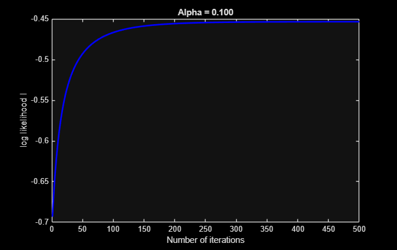

SDSU Machine Learning Course (CompE510/EE600/CompE596)
Contents
Programming Assignment: Logistic regression
Dataset comes from: http://networkrepository.com/pima-indians-diabetes.php
Instructions ------------
This file contains code that helps you get started on the logistic regression assignment.
You will need to complete the following functions in this assignment
loadData.m featureNormalize.m gradientAscent.m likelihoodFunction.m evaluateAccuracy.m predict.m sigmoid.m
For this part of the assignment, you will need to change some parts of the code below for various experiments (e.g., changing learning rates).
Initialization
clear ; close all; clc
================ Part 1: Data Preprocessing ================
fprintf('===== Part 1: Data Preprocessing ===== \n'); % Instructions: The following code loads data into matlab, splits the % data into two sets, and performs feature normalization. % You will need to complete code in loadData.m, and % featureNormalize.m % ============================================================ fprintf('Loading data ...\n'); % ====================== YOUR CODE HERE ====================== % Step 1: Load data [X_train, y_train, X_test, y_test] = loadData(); % ============================================================ [num_train, m] = size(X_train); % num_train is the number of total training examples % m is the number of features % Print out some data points fprintf('First 10 examples from the training dataset: \n'); fprintf(' x = [%.0f %.0f %.0f %.0f %.0f %.0f %.0f %.0f], y = %.0f \n',... [X_train(1:10,:) y_train(1:10,:)]'); fprintf('\n'); % Scale features and set them to zero mean fprintf('Normalizing Features ...\n'); % ====================== YOUR CODE HERE ====================== % Step 2: Normalize the features. [Xn_train, mu, sigma] = featureNormalize(X_train); % ============================================================ % Print out some normalized data points fprintf('First 10 examples from the training dataset after normalization: \n'); fprintf(' x = [%.0f %.0f %.0f %.0f %.0f %.0f %.0f %.0f], y = %.0f \n',... [Xn_train(1:10,:) y_train(1:10,:)]'); fprintf('\n'); % Add intercept term to Xn_train Xn_train = [ones(num_train, 1) Xn_train]; fprintf('Program paused. Press enter to continue.\n'); pause;
===== Part 1: Data Preprocessing ===== Loading data ... First 10 examples from the training dataset: x = [3 122 78 0 0 23 0 40], y = 0 x = [0 104 76 0 0 18 1 27], y = 0 x = [1 106 76 0 0 38 0 26], y = 0 x = [5 44 62 0 0 25 1 36], y = 0 x = [3 96 78 39 0 37 0 40], y = 0 x = [7 133 88 15 155 32 0 37], y = 0 x = [6 92 62 32 126 32 0 46], y = 0 x = [2 74 0 0 0 0 0 22], y = 0 x = [5 132 80 0 0 27 0 69], y = 0 x = [3 171 72 33 135 33 0 24], y = 1 Normalizing Features ... First 10 examples from the training dataset after normalization: x = [-0 0 0 -1 -1 -1 -1 1], y = 0 x = [-1 -1 0 -1 -1 -2 0 -1], y = 0 x = [-1 -0 0 -1 -1 1 -1 -1], y = 0 x = [0 -2 -0 -1 -1 -1 0 0], y = 0 x = [-0 -1 0 1 -1 1 -1 1], y = 0 x = [1 0 1 -0 1 0 -1 0], y = 0 x = [1 -1 -0 1 0 -0 -1 1], y = 0 x = [-1 -1 -4 -1 -1 -4 -1 -1], y = 0 x = [0 0 1 -1 -1 -1 -1 3], y = 0 x = [-0 2 0 1 1 0 -1 -1], y = 1 Program paused. Press enter to continue.
========== Part 2: Maximum Likelihood & Gradient Ascent =============
fprintf('===== Part 2: Maximum Likelihood & Gradient Ascent ===== \n'); % Instructions: The following code applies gradient ascent to % estimate the parameters in a logistic regression % model based on the idea of maximum likelihood estimation. % You should complete code in gradientAscent.m, % likelihoodFunction.m % % Try running gradient ascent with % different values of alpha and see which one gives % you the best result. % ============================================================ % ====================== YOUR CODE HERE ====================== % Step 1: Configure the hyper-parameters, including % 1. alpha: learning rate % 2. num_iters: number of training iterations alpha = .1 % you should change this num_iters = 500 % you should change this % ============================================================ % Initialize beta beta = zeros(m+1, 1); % ====================== YOUR CODE HERE ====================== % Step 2: Run Gradient Descent [beta, l_history] = gradientAscent(Xn_train, y_train, beta, alpha, num_iters); % ============================================================ % Plot the convergence graph figure; plot(1:numel(l_history), l_history, '-b', 'LineWidth', 2); xlabel('Number of iterations'); ylabel('log likelihood l'); str = sprintf('Alpha = %.3f',alpha); title(str); % Display gradient descent's result fprintf('beta computed from gradient descent: \n'); fprintf(' %f \n', beta); fprintf('\n'); fprintf('Program paused. Press enter to continue.\n'); pause;
===== Part 2: Maximum Likelihood & Gradient Ascent =====
alpha =
0.1000
num_iters =
500
beta computed from gradient descent:
-0.907720
0.506059
1.098096
-0.207903
-0.071558
-0.067985
0.805433
0.296812
0.183669
Program paused. Press enter to continue.

========== Part 3: Evaluate performance =================
fprintf('===== Part 3: Evaluate Performance ===== \n'); % Instructions: The following code evaluates the performance of % the trained logistic regression model. You should % complete code in evaluateAccuracy.m, predict.m, and sigmoid.m % ============================================================ % ====================== YOUR CODE HERE ====================== % Step 1: Evaluate the performance of the trained model % Hint: The testing set also needs to be normlized first num_test = size(X_test,1); Xn_test= (X_test - mu) ./ sigma; % you should change this Xn_test = [ones(num_test,1) Xn_test]; accuracy = evaluateAccuracy(beta, Xn_test, y_test); % ============================================================ % Display the prediction accuracy fprintf('Accuracy:\n %f\n', accuracy); fprintf('\n'); % ====================== YOUR CODE HERE ====================== % Step 2: Given a new input x = [3, 100, 79, 19, 100, 36, 0.8, 30], predict the output x_new = ([3, 100, 79, 19, 100, 36, 0.8, 30]- mu )./sigma; % You should change this x_new = [1 x_new]; y_new = predict(beta, x_new); % You should change this % ============================================================ % display the predicted output fprintf('Predicted output:\n %d\n', y_new);
===== Part 3: Evaluate Performance ===== Accuracy: 76.521739 Predicted output: 0